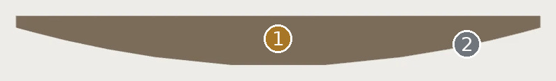
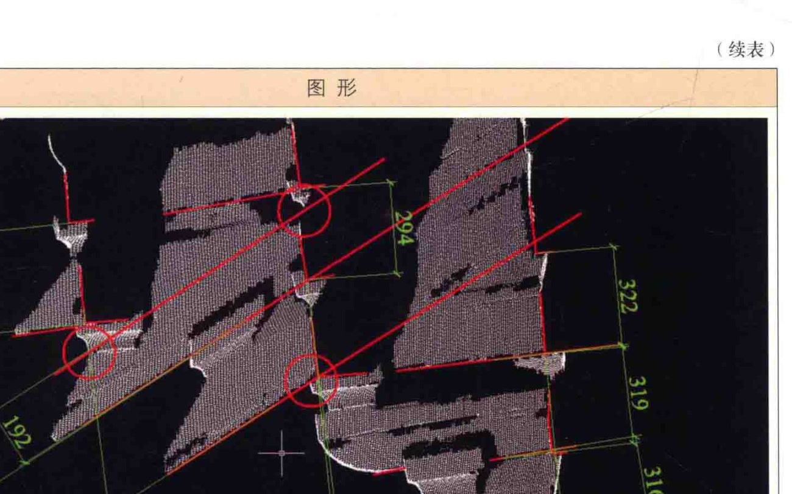
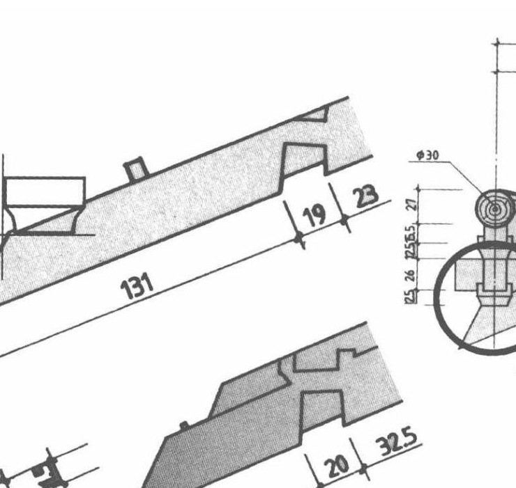
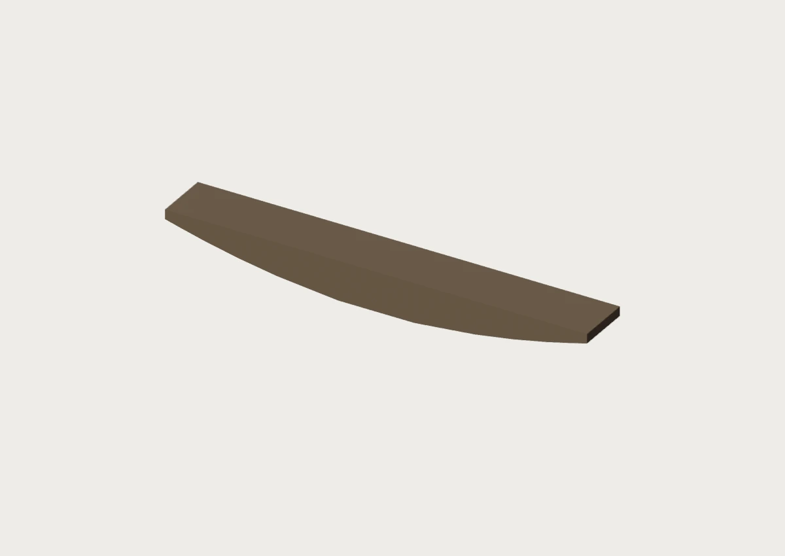
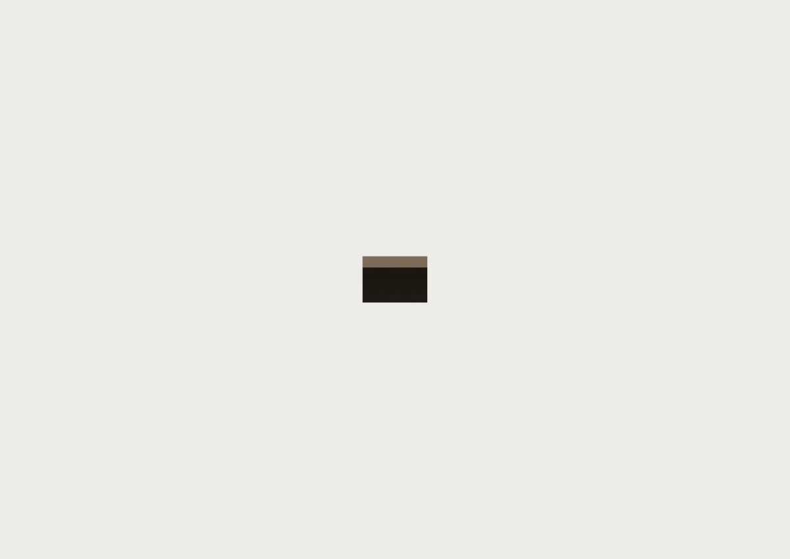
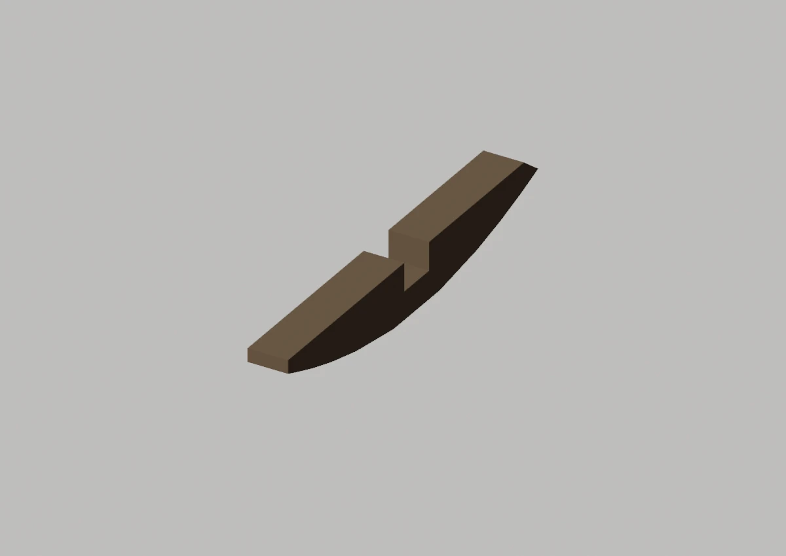
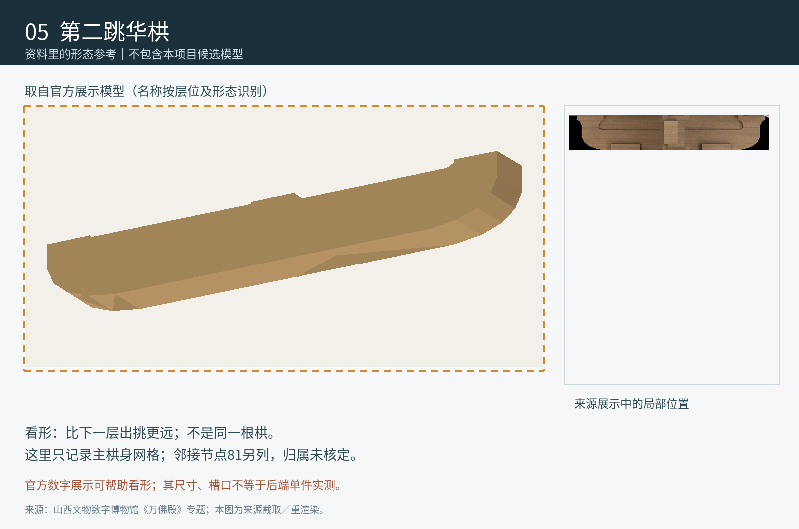

现Master为对应跳位的简化形态
先看形，再看差异


匿名展示参考不足以证明精确单件
定性对照：两侧未做比例归一或像素叠加。橙色虚框只表示原图查找范围。
02 / 形态细节
其他角度、截面与现有局部版本






现有局部工作模型 · 与 Master 分开看

03 / 原图与位置
目标在原始资料的哪里


安装位置与复用
西南角转角铺作南向分支 / 二跳；南西次间补间铺作 / 二跳；南立面西中柱柱头铺作 / 二跳；南明间补间铺作 / 二跳；南立面东中柱柱头铺作 / 二跳；南东次间补间铺作 / 二跳；东南角转角铺作南向分支 / 二跳；西北角转角铺作北向分支 / 二跳；北西次间补间铺作 / 二跳；北立面西中柱柱头铺作 / 二跳；北明间补间铺作 / 二跳；北立面东中柱柱头铺作 / 二跳；北东次间补间铺作 / 二跳；东北角转角铺作北向分支 / 二跳；东北角转角铺作东向分支 / 二跳；东北次间补间铺作 / 二跳；东山北中柱柱头铺作 / 二跳；东明间补间铺作 / 二跳；东山南中柱柱头铺作 / 二跳；东南次间补间铺作 / 二跳；东南角转角铺作东向分支 / 二跳；西北角转角铺作西向分支 / 二跳；西北次间补间铺作 / 二跳；西山北中柱柱头铺作 / 二跳；西明间补间铺作 / 二跳；西山南中柱柱头铺作 / 二跳；西南次间补间铺作 / 二跳；西南角转角铺作西向分支 / 二跳
变体：二跳
Master：CMP-GONG-HUAGONG-001_MASTER
对应实例范围（28条登记记录，不是物理件数）
- 华栱-南-01-二跳 · 西南角转角铺作南向分支 / 二跳
- 华栱-南-02-二跳 · 南西次间补间铺作 / 二跳
- 华栱-南-03-二跳 · 南立面西中柱柱头铺作 / 二跳
- 华栱-南-04-二跳 · 南明间补间铺作 / 二跳
- 华栱-南-05-二跳 · 南立面东中柱柱头铺作 / 二跳
- 华栱-南-06-二跳 · 南东次间补间铺作 / 二跳
- 华栱-南-07-二跳 · 东南角转角铺作南向分支 / 二跳
- 华栱-北-01-二跳 · 西北角转角铺作北向分支 / 二跳
- 华栱-北-02-二跳 · 北西次间补间铺作 / 二跳
- 华栱-北-03-二跳 · 北立面西中柱柱头铺作 / 二跳
- 华栱-北-04-二跳 · 北明间补间铺作 / 二跳
- 华栱-北-05-二跳 · 北立面东中柱柱头铺作 / 二跳
- 华栱-北-06-二跳 · 北东次间补间铺作 / 二跳
- 华栱-北-07-二跳 · 东北角转角铺作北向分支 / 二跳
- 华栱-东-01-二跳 · 东北角转角铺作东向分支 / 二跳
- 华栱-东-02-二跳 · 东北次间补间铺作 / 二跳
- 华栱-东-03-二跳 · 东山北中柱柱头铺作 / 二跳
- 华栱-东-04-二跳 · 东明间补间铺作 / 二跳
- 华栱-东-05-二跳 · 东山南中柱柱头铺作 / 二跳
- 华栱-东-06-二跳 · 东南次间补间铺作 / 二跳
- 华栱-东-07-二跳 · 东南角转角铺作东向分支 / 二跳
- 华栱-西-01-二跳 · 西北角转角铺作西向分支 / 二跳
- 华栱-西-02-二跳 · 西北次间补间铺作 / 二跳
- 华栱-西-03-二跳 · 西山北中柱柱头铺作 / 二跳
- 华栱-西-04-二跳 · 西明间补间铺作 / 二跳
- 华栱-西-05-二跳 · 西山南中柱柱头铺作 / 二跳
- 华栱-西-06-二跳 · 西南次间补间铺作 / 二跳
- 华栱-西-07-二跳 · 西南角转角铺作西向分支 / 二跳
04 / 证据与边界
出处、模型身份与未知部分
仍然未知：不以第一跳华栱的图或截面替代第二跳。
原工程记录（按原文保留）：简化弧形有同建筑来源引导；单材/足材不能混同。214.2mm局部包络与完整足材之间缺切割范围证明，不能直接拉伸到316.4mm。
资料出处
10月14日归档的官方展示模型提取图｜不是独立实测 · 归档原图 6fd13f56b4-05_SOURCE_第二跳华栱.png

A1 · PDF第336页 / 印刷第321页 · 归档原图 A1-p336.jpg
A2 · PDF第41页 · 归档原图 A2-p041.jpg
A1 · PDF第73页 / 印刷第58页 · 归档原图 A1-crop-huagong.jpg

A1 · PDF第50页 / 印刷第35页 · 归档原图 A1-p050.jpg


模型原始渲染、网格身份与批准范围
现有 BLEND · axon 云端只读渲染；原始二进制与网格/变换未改。

现有 BLEND · front 云端只读渲染；原始二进制与网格/变换未改。

现有 BLEND · side 云端只读渲染；原始二进制与网格/变换未改。

trial:EAST_FRONT_HUA2_LOCAL main工作V003：含局部批准和待审对象；此图不升级批准。

A1、A2、A3共享测绘数据脉络，不作为三次独立复测。官方展示只作形态参考；推断、遮挡与未知不升级为实测事实。